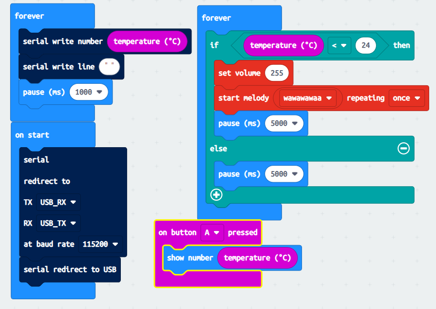
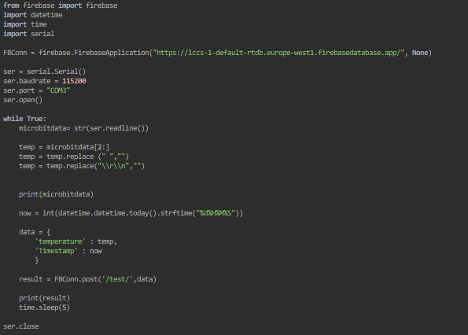

To start off with this, I figured out an ideal temperature that is neither too cold nor to hold. A perfect mild room temperature number. After research online and in person, I decided to do 24 degrees Celsius. This would allow for more data capture in normal day-to-day life. The microbit code was no issue and was pretty straight forward Using a forever loop, I sent all temperatures values recorded every 1 second to the firebase. This helps with data capture and implementing the one system using the site. On start, I opened up the port and used the baud rate to connect to the microbit to the pc via the python script. This allows the data to move to the firebase with ease. After that, I set up another forever if loop. If the temperature goes below 24 that alarm sounds off, if not then it stays quiet. 
The python code had some difficulty in the start as my pc wouldn't allow me to find what ports were opened, but I quickly solved that issue by looking for hidden devices in device manager. After finding out the port, I then set up a simple data capture and cleaning up script that would take data from the microbit and send it over the firebase all cleaned up 
The firebase system was the most convulted and error filled spot of the project as I had no prior knowledge of anything related to do with firebase. One promientn error i faced was when connecting the site to the firebase, it would keep on saying "not defined". I solved this issue by stating the source library of the firebase system.
When sending the data over to the website i had a problem in which the data refused to show up even when it showed from the firebases side that it was sending. I broke down every part of the code in compartments and found the issue which was a simple incorrect spelling
The website i made was not full of css or anything. It was straight to the point and consistent like in Shneiderman's "Eight Golden Rules for interface design". I didnt waste time no resources on it
I tested my code by putting it through any extreme variables such as an insanely cold/insanely hot temperature to see if the microbit would malfuction but it didnt. The code is effiecent up until the number 2,147,483,647
I also tested my website email validation by putting it through extreme cases and very lowkey cases. It succesfully marked what was incorrect as incorrect and what was correct as correct